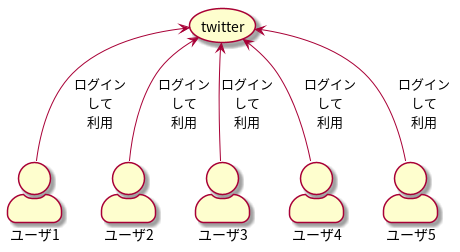
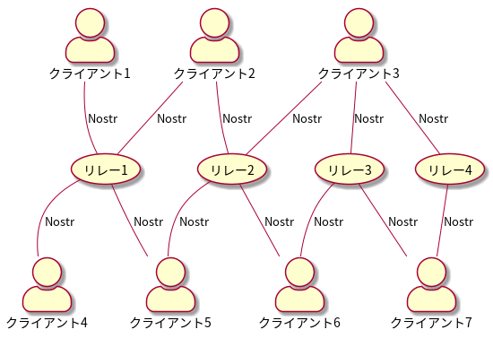
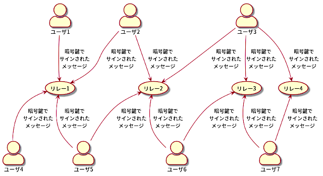

twitter の度重なるトラブルで twitter 以外の SNS が注目され始めており、様々な Web メディアで twitter 以外の SNS を紹介する記事が公開され注目を浴びている昨今ですが、皆様いかがお過ごしでしょうか。
私は最近 Nostr という SNS、というよりも Nostr というプロトコル上に構築された世界に入り浸っております。
変な言い方ですよね。Nostr って SNS だろ？そういう？？？が出てくるのもわかります。でも Nostr はそういう変な言い方をするしかない世界なのです。
今日の日記はこの Nostr とは何なのかということをごく大雑把に俯瞰してみたいと思います。
まずは twitter の仕組みと言うか構成を見てみましょう。
通常 twitter のような SNS の場合、中央にデンっと twitter のサービスを提供するコンピュータ達がいて、ユーザは twitter にログインして twitter を利用します。

Instagram、Facebook 等も同じような構成です。まぁこれはわかりますよね。
次に Nostr の場合を見てみましょう。
Nostr の場合、中央にサービスがあるわけではありません。Nostr は下図のようにユーザが使用するクライアントというソフトウェアとリレーというものが Nostr というプロトコルでつながっています。

そう。Nostr はサービス名称ではなく通信プロトコルの名称なのです。Notes and Other Stuff Transmitted by Relays ( リレーによって送信されるメモおよびその他のもの ) の略称が Nostr です。
プロトコルとかなんか難しい言葉がでてきました。
プロトコルとは通信手順の意味で、ちょっと電話を例に説明してみましょう。
電話によりメッセージを伝える手順を考えてみてください。
まず最初に電話をかける相手の電話番号を電話機に入力します。
すると NTT だとか KDDI だとかの回線や交換機を通じて相手の電話機のベルが鳴ります。
相手は電話が鳴ったら受話器を取ってもしもしと言います。
そして会話が終われば、お互いに挨拶をして電話を切ります。
電話で会話をする段取りとしては以上のようになります。
こういったメッセージを交換するための一連の手順をプロトコルと言います。
Nostr もこういったソフトウェアが従わなければならない通信のための一連の手順を定めたプロトコルになります。
とはいえ多くの人が便宜上 SNS サービスの名称として Nostr という呼称を使っています。私も便宜上 SNS の名称として Nostr という呼称を使っています。
またシステムの実装として SNS っぽい実装が多くを占めるので、SNS の名称として Nostr という呼称を使うのもあながち間違っているわけでもないように筆者には思えます。
とはいえ Damus などのクライアントソフト名を SNS 名として使うのは筆者としては受け入れるのは困難です。
将来的にクライアント・ソフトにとどまらずサーバーを設置して文字通り SNS をつくって、それが Nostr をしゃべる、っていうのなら SNS 名として積極的に使う理由になりますけど。
クライアント・アプリとして有名なものに Iris、Snort、Damus、Amethyst、etc があります。繰り返しますが、これらはあくまで Nostr のクライアントであり SNS の名称ではありません。
Web クライアントというものもあり Iris、Snort、Coracle、nostter 辺りが筆者が認識している Web クライアントです。
あなたが秘密鍵でテキストメッセージにサインをし、それをリレーに投げれば ( 通常複数のリレーに投げる ) Nostr にテキストメッセージを投稿したことになります。

サインをするのはクライアント・ソフトウェアで、通常あなたが直接サインのための操作をするわけではありません。メッセージの投稿時にサインは自動的に行われます。
システムへのログインはどうするの？という声が聞こえてきそうです。
Nostr では一部の有料リレー等への接続を除きログインというものは必要ありません。もちろん将来は全てのリレーで必要になる場合もあるかもしれませんが、現在の Nostr の仕組みでは秘密鍵でサインしたテキストメッセージをリレーに投げれば Nostr にテキストメッセージを投稿したことになります。
現時点ではログインって言葉が示すような意味でのログインではないので、クライアントを使うための認証と暫定的に考えておいてください。
NIP-07 あたりの仕様をきちんと理解しているわけではないので、今は宿題とさせてください。
長くなったので今日はこれくらいにしようと思いますが、次回は Nostr で最も重要な鍵ペアについて書きたいと思います。